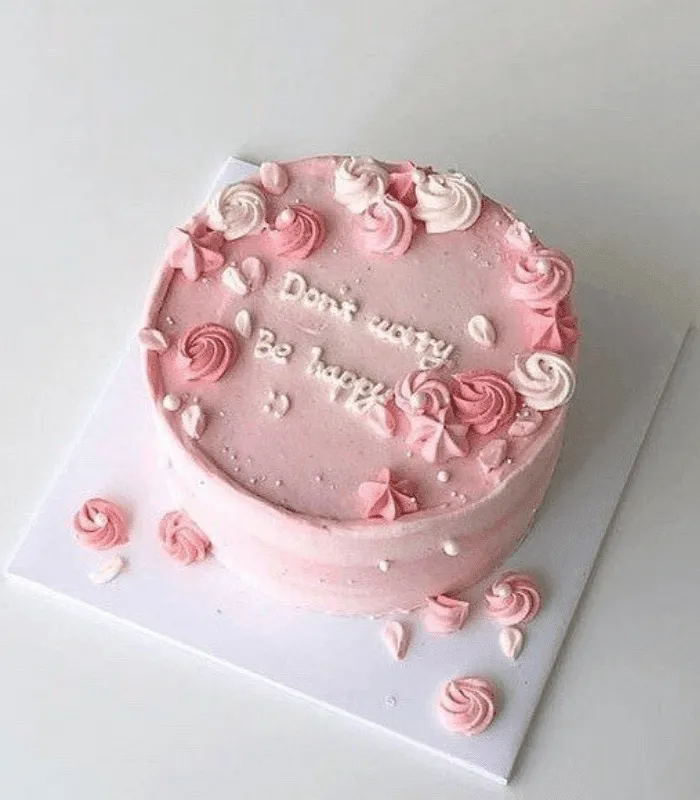

VİNTAGE CAKE

Pandispanya Malzemeleri
- 4 adet yumurta
- 1 su bardağı şeker
- Yarım çay bardağı ılık su
- (1 su bardağı + 2 yemek kaşığı) un
- Kabartma tozu
- Vanilya
Nasıl Yapılır
- Yumurtaların sarısını ve beyazını ayrı kaplara ayıralım.
- Öncelikle yumurtanın beyazina 1 tutam tuz ekleyip mixer ile 5 dk çırpalım. Krem şanti kıvamına gelince bırakalım.
- Diğer kapta bulunan yumurta sarısının üzerine şekeri ilave edelim ve çırpalım, yarım çay bardağı ılık suyu da üzerine ekleyip çırpmaya devam edelim.
- Rengi değişince üzerine un, kabartma tozu ve vanilyayi ekleyelim sonrasında spatula ile karıştıralım.
- Son olarak üzerine hazırladığımız yumurta beyazıni kaşık kaşık ekleyelim.
- Spatula ile yavaş yavaş alttan üste karıştıralım. Hamuru kek kalıbına alalım 180 derecede 30+35 dk pişirelim
Krema Malzemeleri
- 4 su bardağı Süt
- 2 yemek kaşığı un
- 1 paket vanilya
- 1 dolu yemek kaşığı tereyağı
- 1 paket krem şanti ( yada sıvı krema
- 2 yemek kaşığı nişasta
Nasıl yapılır
- Tereyağ ve vanilya hariç bütün malzemeler tencereye koyulup karıştırılır ve ocGöre karıştırarak pişirilir..
- Kaynamaya başlayınca üzerine yağ ve vanilya eklenip ocağın altı kapatılır ve soğumaya alınır.
- İsteğe göre kakao eklenebilir.
- Soğuyan kremaya krem şanti eklenip çırpılır.
- Krem şanti yoksa sıvı krema da eklenebilir ve soğumaya bırakılır
AFİYET OLSUN